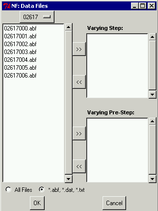

Data File Selection

The data files for each type of data are entered separately from the
Select Data Files window which is opened when "Select Data Files" is
chosen from the pull-down Data menu at the top left of the NEUROFIT
window.
The name of the current directory is displayed at the top left of the
Select Data Files window, and its contents (files and subdirectories)
are listed under it.
(By default, just files with extensions
abf, dat, or txt are
displayed, although choosing "All Files" at the bottom of the window
will display all files in the directory.)
To move up in the directory hierarchy,
click on the name of the current directory and select the appropriate
directory from the pull-down menu.
To move down in the directory hierarchy, double-click on the
name of the appropriate subdirectory in the contents list.
Files can be highlighted with the left mouse button
(<shift>-click to select more than one).
The highlighted files are then selected as containing data with varying
steps or varying presteps by clicking on the appropriate
transfer button in the middle of the window.
Selected files are displayed in the regions on the right.
Files are de-selected by highlighting them in the right regions and
clicking on the reverse transfer button.
Once selection is complete, clicking on "OK" at the bottom of the window
will load the selected files into NEUROFIT.
If a selected file is an abf file and if the file header
indicates that exactly one of its channels
containing data has some scale of amperes units
(nA, pA, etc.) then this channel will be selected, otherwise another
small window will appear and you will be required
to select the appropriate channel that contains the electrical current
data.
 The units of the data within each file must also be determined. If a file
is an
The units of the data within each file must also be determined. If a file
is an abf file, the units for time, current, and voltage
will be determined from the file's header. If this information is missing
or cannot be determined for some reason, a window will appear asking you to
specify the missing units for this file.
If a file is a text file, a window (as shown at right)
will appear asking you to specify the
units for the time and the current. (Voltage units are specified later when
voltage levels are entered, see
Voltage and Voltage Step Specifications.)
The data for each file will be scaled to the project units (see
Measurement Units).
It is the user's responsibility to be sure
that the selected files do indeed have appropriate data.
If when selecting varying step data you select a file which actually
contains varying step potential experiments, or vice versa,
the data will be plotted properly but
the starting time and fitting and noise windows will be in the wrong
location (either far to the left or right of where they should be).